ANIMISM
The Living City
Nitsan Bartov, Tom MelloulBisTAU Studio led by Arch. Moti Bodek, 2019
As we enter the 21ˢᵗ century, humanity’s aspiration for stability is increasingly shifting towards a desire for change and constant stimulation.
The growing gap between these perceptions is ironically often manifested in newly built urban environments, with Israel being no exception; A distinct example of which is Netanya’s new Ir Yamim district - the project's case study.
ANIMISM aspires to re-animate lifeless artificial urban landscapes and bridge the gap between them and nature. By employing an algorithm-driven protocell system, the project aims to provide the city with the capabilities of interpreting space through people, and dynamically populate inanimate voids on the go.
The animated city is active, dynamic, and consistently relevant; It adapts, reacts, and encourages a sense of empathy between the people and their environment.
ANIMISM is the birth of the living city.
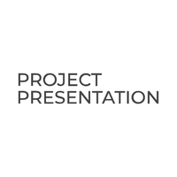
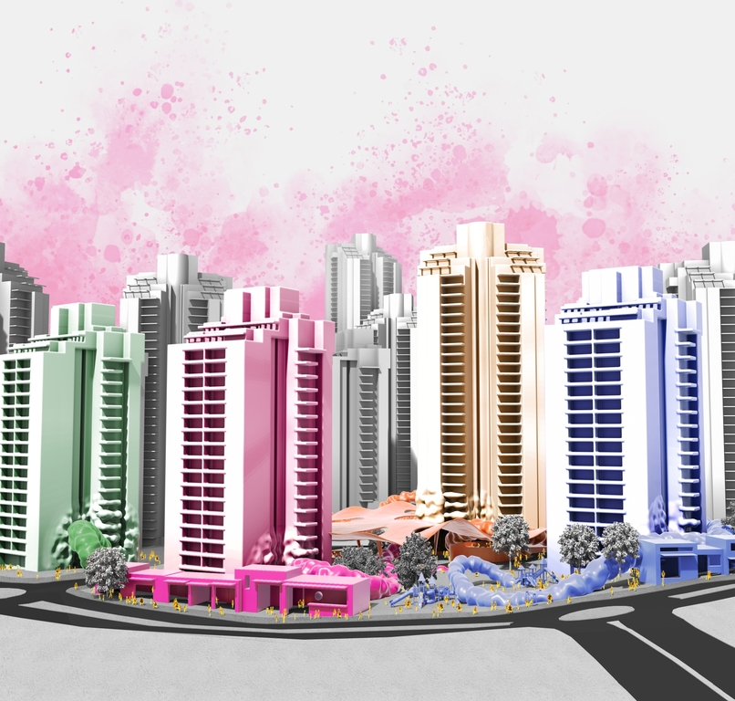
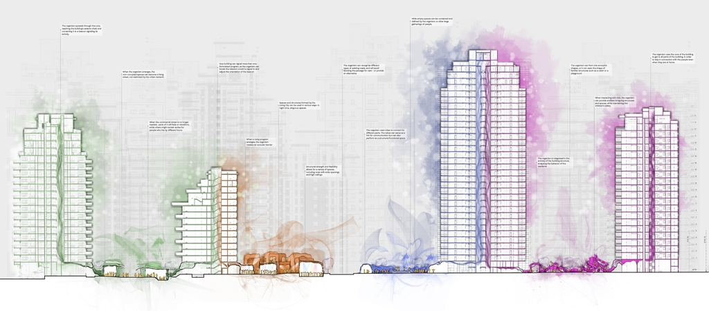

 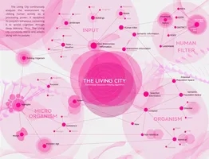
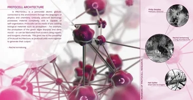
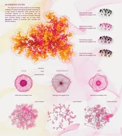
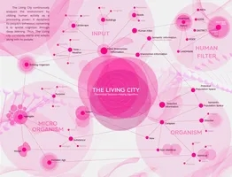
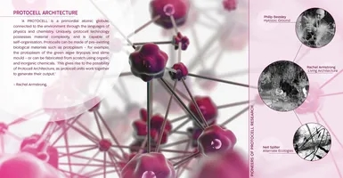
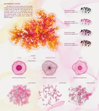
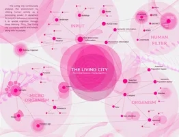
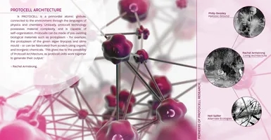
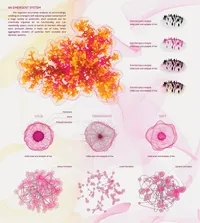
EVO
Living Evolution
Eka Janashia, Tom MelloulResidential Studio led by Arch. Leonardo Kelijman & Arch. Dafna Matok, 2017
Urban environments have seen immense growth in population density in recent decades, leading to an extensive vertical expansion of the urban residential building.
As part of this global trend, Tel-Aviv's homes have increasingly risen higher since the 2000s. While some neighberhoods adapted well, others have essentialy become gated communities. In light of this phenomenon, we've set out to examine an alternative spatially expandable urban model for communal living.
Firstly, we've interconnected the city's green spaces, a quintessential Tel-Avivian urban generator, in an attempt to re-read the city. By converting this 2D logic into spatial tesselation, we produced a porous network that could expand and contract. Each geometrically unique cell could interchangeably act as a dwelling unit, open space, or merge with neighboring cells to accommodate for larger-scale activities - giving birth to EVO - Living Evolution.


EAAA
Elifelet Academy of Applied Arts
Nitsan Bartov, Rotem Arad, Tom MelloulComplex Studio led by Arch. Rami Gil & Arch. Leonardo Kelijman, 2018
Israel's ongoing light railway project is set to have a major impact on future urban life in the country and it's financial capital Tel Aviv. Accordingly, planned railway stations along its route hold an immense potential as financial and cultural urban generators.
Such opportunity is examplified in the future Elifelet Station, which is located in a No Man's Land embedded between three significant and essentially different Tel-Avivian neighberhoods: Neve Tzedek - the affluent; Florentin - the young and saturated; and North Jaffa - disparaged & full of latent promise.
The Elifelet Academy of Applied Arts aims to maximize the station's potential by infusing it with an academic, cultural and commercial urban hub. In addition to offering affordable student housing, EAAA fully engages at street level by combining relevant commercial and cultural programs directly linked to academic functions above.


MIST
Talpiot Bath House
Noa Eisenberg, Tom MelloulInterior Design Studio led by Arch. Guy Re Moor, 2018
Talpiot market (Arch. Moshe Gerstel, 1940) has long served as one of Haifa’s most influential cultural landmarks. Sadly, this fine specimen of the International Style that once housed a bustling market has deteriorated since the 80's to near-abandonment in recent years.
The symmetric structure, despite its current disfunction, beares a striking resemblance to ancient classical bathhouse layouts. As many bathhouses possess mysterious qualities to them, so does Talpiot: It tells a mystical story of constant transformation through its worn-out components.
Stagnant water, crumbling walls, damp concrete, and broken glass - these, and many more, contribute to a Talpiot's aura of patina that encapsulates its concrete shell. The building's aesthetics of ruin and decay captivates one’s imagination, as it becomes one with nature’s elements. Talpiot's materials bind with water, light, and vegetation to ultimately transcend into metamaterials - laying the foundations for MIST - Talpiot’s Bathhouse.


 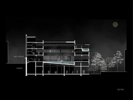
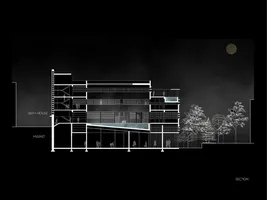

UMAGUTI
"Where There's Life"
Nitsan Bartov, Yagev Langer, Tom MelloulThe Azrieli Global Studio Program,
In collaboration with McGill University &, The Technion.
Tutor: Arch. Tamir Lavie, 2016
This intensive 6-week course was an immersive design studio which included an excursion to the Canadian Subarctic, an area plentiful with minerals, most notably Iron Ore.
Over the past decades, lax government regulations have allowed for unattended and overly intense mining, leaving behind barren and wounded soil, and a struggling, neglected, local community.
UMAGUTI aims to heal the soil's open wounds while providing local communities with robust tools that will help them grow and prosper.Through parametric design, solar form-finding, and advanced building technologies, UMAGUTI puts abandoned mines to use and utilizes their unique footprint. The terrace-like topography coupled with a lightweight ETFE membrane allows to accomodate durable housing and sustainable sub-arctic farming that enables the cultivation of fresh local produce.


CLEAR STUDIO
A pop-up urban music studio
Tom MelloulTechnology Studio B led by Simone Friedman, 2016
The Technology Studio focuses on the integrated design of a small structure with an emphasis on building technologies, materials, and design details. During the first part of the semester, the students designed a simple public toilets structure in large groups. During the 2nd part of the semester, each student was assigned to define and design a detachable pop-up function that will attach to the toilets anchor structure.
The CLEAR STUDIO was designed as a traveling urban pop-up studio that can attach to each of the city's anchor public toilets structures. The studio's transparency allows for the participation of residents and passers-by alike and can enable the exposure of up and coming musicians. The constant change of the studio's location could contribute to a variety of urban activities (such as Tel Aviv's yearly "Book Week", Marathons, Rallies, etc.) and can also act as a generator for cultural activity in impoverished areas of the city.


HS Building
Health Sciences Buidling
Client: The Academic College of Tel Aviv-Yaffo.Project leaders: Arch. Alessya Tonetti & Arch. Tom Melloul.
Studio: Bea Architects & Town Planners, 2017
Reacting to the increasing shortage of academically trained personnel in the Israeli health field, The Academic College of Tel-Aviv Yaffo has commissioned our studio to design an innovative new building in a challenging footprint, alongside producing an extensive brochure for potential donors.
During the design process, the studio focused on harnessing the building's natural ventilation potential in order to substantially reduce energy use and improve thermal comfort. By utilizing innovative energy modeling and advanced simulations, we were able to maximize the building's natural ventilation potential.
The Health Sciences Building's design aims to fundamentally connect and respond to its environment. The Building’s envelope and materials were designed to accommodate Jaffa’s local weather and the site’s natural seaside proximity.


Neot Shamir
Educational Buildings
Client: Yavne Municipality, Israel.Project leader: Arch. Alessya Tonetti, Arch. Batia Melloul.
Studio: Bea Architects & Town Planners, 2017
Since 2010, Yavne has seen a substantial influx of positive migration. Joined primarily by young families, it has been one of Israel's top growing cities and is set to face significant infrastructure challenges in the near future.
Our studio was asked to participate in an invite-only competition for the planning of multiple educational buildings and their urban layout (3,400 sqm) in Neot Shamir, Yavne, Israel. The buildings' programs included an 18-classroom elementary school and a 5-classroom kindergarten cluster.
As a member of the design team led I had an integral role in the planning & design process for the 18-class elementary school, which our studio was later granted to fully plan and is currently being built.